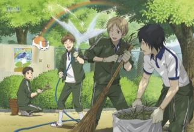
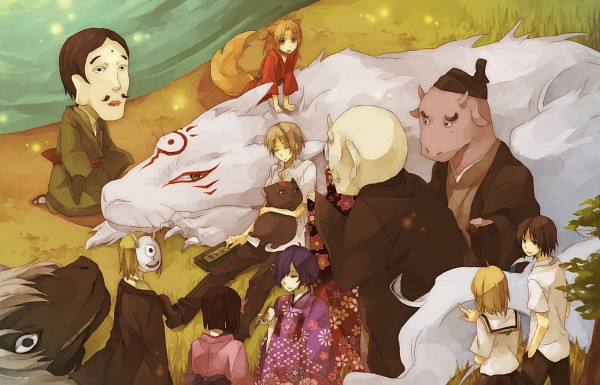

|
夏目贵志从外祖母夏目玲子的遗物中得到了那些契约书所做成的“友人帐”，他决定将友人帐中妖怪们的名字一一归还。
在夏目身边，开始聚集起各种各样的妖怪们。能看到妖怪的少年夏目贵志，与招财猫外表的妖怪斑一起，为大家讲述一个个奇异、悲伤、怀念、令人感动的温馨故事。
我叫夏目贵志，能告诉我你的名字吗？ |
夏目贵志生来拥有强大的灵力，能看到妖怪和神明的存在。因其父母双亡，常年辗转于互相推卸责任的亲戚之间，并受到同龄人的欺负。 |
同时被其能力影响，未曾与任何人深交，造成性格一定程度上的孤僻。本性和善，宽厚，踏实。对于自身的不幸，无论是对人类还是妖怪都未曾抱怨过。 |
被藤原夫妇收养后踏入高中。一次被妖怪追赶打破了一只妖怪“斑”的封印，继而牵涉到其祖母夏目玲子的遗物“友人帐”——一本记录着众多妖怪名字的契约书。 |
对友人帐产生兴趣的“斑”与贵志定下约定，自己守护其一生以替换友人帐的所有权，平日则化身成大头招财猫模样的“猫咪老师”。
在“斑”的陪伴、八原妖怪和同学们关心鼓励下，贵志经历了一个个或奇异、悲伤、感怀的怪诞故事，并逐渐学会与人类、妖怪友好相处，谱写出一段充满人性哲思的温馨物语。 |
声优阵容:
夏目贵志少年时代：藤村步 小狐狸（矢岛晶子） 柊（雪野五月） 夏目贵志 ( 神谷浩史 ) 夏目玲子 ( 小林沙苗 ) 名取周一 ( 石田彰 ) 田沼要 ( 堀江一真 ) 笹田纯 ( 泽城美雪 ) 多轨透 ( 佐藤利奈 ) 西村悟 ( 木村良平 ) 北本笃史 ( 菅沼久义 ) 猫咪老师 ( 井上和彦 ) 的场静司 ( 诹访部顺一 ) 其他人物 藤原滋 ( 伊藤荣次 ) 藤原塔子 ( 伊藤美纪 ) 慎一郎 ( 波田野由依 ) 七濑 ( 土井美加 ) 花子 ( 喜多道枝 ) 民子 ( 石毛佐和 ) 绪方由里子 ( 伊藤静 ) |
 |
|  |
夏目组犬之会 つるつる ( 松山タカシ ) 牛 ( 下崎紘史 ) 斑 ( 井上和彦 )三筱 ( 黑田崇矢 ) 小胡子 ( チョー ) 红峰 ( 渡边美佐 ) 河童 ( 知桐京子 ) 丙 ( 冈村明美 )
其他妖怪 菱垣 ( 齐藤贵美子 ) 露神 ( 青野武 ) 濯 ( 安元洋贵 ) 时雨 ( 土田大 ) 三斗 ( 平井善之 ) 狸追 ( 松风雅也 ) |
设定用语:
人帐（ゆうじんちょう） 该作中的核心道具，贵志的祖母夏目玲子制作的妖怪契约书。里面写着所有铃子打败的妖怪的名字。在这个纸上被写名字的妖怪，不能违逆友人帐持有者的召唤，如果纸烧掉或撕毁，这个纸上被写名字的妖怪便会死亡。因此，被夺去名字的妖怪形同生命被掌握住，而拥有友人帐，便可以率领众多妖怪，所以被写上名字的妖怪会急于要回自己的名字，或和其他妖怪一样想抢夺友人帐来率领名字在友人帐里的妖怪。
寻找妖怪名字的方法： 在脑中想着妖怪的样子，说出：“护吾之人，显其名”。
还给妖怪名字的方法： 必须要有玲子的唾液和气息，血亲亦可。撕下契约后咬在嘴里，用力合掌并集中精神，瞬间吐气。归还名字会消耗大量体力。 |
治愈系神作：夏目友人帐
夏目愿你被世界温柔相待
此生无悔入夏目 来世愿做帐中妖